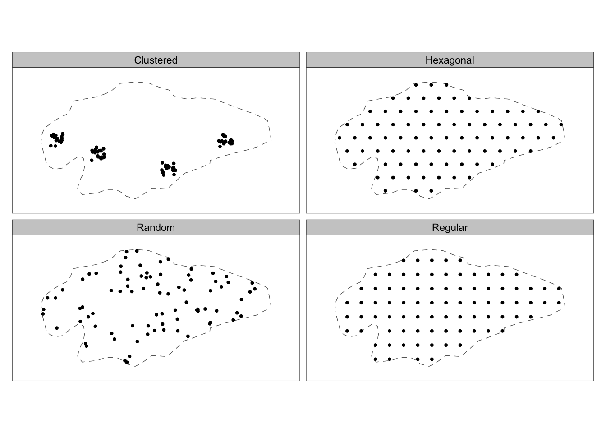

Code
library(sf)
library(dplyr)
library(tidyr)
library(ggplot2)
library(tmap)
library(sp)library(sf)
library(dplyr)
library(tidyr)
library(ggplot2)
library(tmap)
library(sp)source("../func/calc_agr_zones_df.R")
source("../func/calc_agr_zones_sf.R")
source("../func/calc_coverage_index.R")
source("../func/calc_distance_index.R")
source("../func/calc_overlap_index.R")
source("../func/site_category.R")sites_raw = readRDS("../data/tab/point_pattern.rds")
survey = st_read("../data/vect/data.gpkg", layer = "njs_survey", quiet = TRUE)tm_shape(survey) +
tm_borders(lty = "dashed") +
tm_shape(sites_raw) +
tm_dots(size = 0.1) +
tm_facets(by = "period",free.coords = FALSE) +
tm_layout(inner.margins = 0.1)
# prepare for analysis
# 1: add category column
sites = site_category(sites_raw, "size_ha")Simple feature collection with 326 features and 4 fields
Geometry type: POINT
Dimension: XY
Bounding box: xmin: 768888.9 ymin: 4057723 xmax: 809271.2 ymax: 4077758
Projected CRS: WGS 84 / UTM zone 37N
First 10 features:
id size_ha period geometry category
1 1 2.2 Regular POINT (775828.3 4058275) village (1-5)
2 2 2.2 Regular POINT (778370.2 4058275) village (1-5)
3 3 1.5 Regular POINT (783454 4058275) village (1-5)
4 4 3.3 Regular POINT (785995.9 4058275) village (1-5)
5 5 0.7 Regular POINT (775828.3 4060817) small village (0.1-1)
6 6 0.7 Regular POINT (778370.2 4060817) small village (0.1-1)
7 7 4.6 Regular POINT (780912.1 4060817) village (1-5)
8 8 2.0 Regular POINT (783454 4060817) village (1-5)
9 9 1.0 Regular POINT (785995.9 4060817) village (1-5)
10 10 2.0 Regular POINT (788537.8 4060817) village (1-5)# 2: select the column into right order: id, size_ha, category
sites = sites %>%
dplyr::select(id,size_ha, period, category) %>%
relocate(geometry, .after = last_col())
# 3: create list of multiple periods, loop over a list of data frames
sites_list = split(sites, sites$period)Compute
agr_zones_sf = calc_agr_zones_sf(data = sites, size = "size_ha", h_per_person = 2)Plot
tm_shape(agr_zones_sf) +
tm_borders() +
tm_facets(by = "period",free.coords = FALSE) +
tm_shape(sites) +
tm_dots()+
tm_facets(by = "period",free.coords = FALSE) +
tm_layout(inner.margins = 0.1) +
tm_shape(survey) +
tm_borders(lty = "dashed")
SPAG: Index of Spatial Agglomeration
\[ SPAG = I_\text{coverage} * I_\text{distance} * I_\text{overlap} \]
\[ I_\text{coverage} = {\Sigma P_i \over P_r} \]
i.cov = sapply(sites_list, calc_cov_index, size = "size_ha", category = "category",h_per_person = 2, total = TRUE)
i.cov.df = as.data.frame(i.cov)
i.cov.df = cbind(period = rownames(i.cov.df),i.cov.df)
rownames(i.cov.df) = NULL\[ I_\text{distance} = {\Sigma_i \Sigma_j d_{ij}/ k \over \Sigma_i \Sigma_j \hat d_{ij} / k } \]
i.dist = sapply(sites_list, calc_dist_index, survey = survey, total = TRUE)
i.dist.df = as.data.frame(i.dist)
i.dist.df = cbind(period = rownames(i.dist.df),i.dist.df)
rownames(i.dist.df) = NULL\[ I_{overlap} = {P(\cup P_i) \over \Sigma P_i} \]
i.over = sapply(sites_list, calc_over_index, size = "size_ha", h_per_person = 2, total = TRUE)
i.over.df = as.data.frame(i.over)
i.over.df = cbind(period = rownames(i.over.df),i.over.df)
rownames(i.over.df) = NULL# SPAG ----
SPAG = merge(i.cov.df,i.dist.df) %>%
merge(i.over.df) %>%
mutate(
i.spag = i.cov * i.dist * i.over,
period = period
)
knitr::kable(format(SPAG, digits = 2))| period | i.cov | i.dist | i.over | i.spag |
|---|---|---|---|---|
| Clustered | 1 | 1.01 | 0.30 | 0.31 |
| Hexagonal | 1 | 1.00 | 0.95 | 0.96 |
| Random | 1 | 0.99 | 0.82 | 0.81 |
| Regular | 1 | 1.00 | 0.96 | 0.96 |